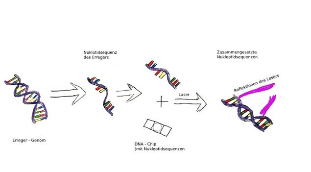
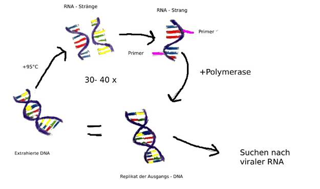

Die vorliegende Arbeit beschäftigt sich mit dem medizinischen Verfahren der Xenotransplantation von Schweineherzen auf den Menschen. Das Ziel dieser VWA ist es herauszufinden, welche Vorteile die Verwendung porciner Organe im Menschen mit sich bringen. Weiters soll erforscht werden, welche Vorbereitungen bzw. Nachbehandlungen an Spender bzw. Empfänger durchgeführt werden müssen. Zunächst werden die anatomischen, histologischen und physiologischen Gemeinsamkeiten von Schweinen und Menschen erläutert. Daraufhin werden die Immunreaktionen erklärt, welche nach der Transplantation auftreten könnten und daher ausgeschaltet werden müssen. Des Weiteren werden Krankheitserreger beschrieben, welche bei der Züchtung der Spendertiere auftreten können, sowie die einzelnen Nachweismethoden selbiger dargelegt. Im Rahmen dieser Arbeit werden außerdem die Erzeugung und Haltung der Spendertiere in einer bestimmten Forschungseinrichtung erörtert. Abschließend wird auf die, nach der Transplantation erforderlichen, Immunsuppremierenden Medikamente eingegangen
Im Jahr 1964 wurde in Jackson (USA) die erste Herztransplantation am Menschen durchgeführt. Das Außergewöhnliche an diesem Eingriff war, dass der Spender nicht wie bei vorangegangenen Organverpflanzungen ein Mensch, sondern ein Schimpanse war. Dieses medizinische Verfahren der Transplantation zwischen zwei Spezies wird als xenogene Transplantation bezeichnet. (vgl. Beckmann, 2000, S. 82.) Aufgrund technischer Hürden wurde die Forschung einige Jahrzehnte stillgelegt und nach einigem Fortschritt vor allem im Bereich der Gen - Editierung wieder aufgenommen. Darunter versteht man die Veränderungen des Erbgutes, wie es beispielsweise bei einem somatischen Zelltransfer der Fall ist, ein Verfahren, welches unteranderem in der vorliegenden Arbeit erläutert wird. Der aktuelle Forschungsstand machte es im Jänner 2022 möglich, das erste genmanipulierte Schweineherz in einen Menschen zu verpflanzen. Der Patient ist zwei Monate nach der Transplantation an einer Infektion mit porcinen Herpesviren verstorben. (vgl. Kögel & Marckmann, 2023) Die vorliegende Arbeit beschäftigt sich mit der Entwicklung der Xenotransplantation - speziell jener von Schweineherzen auf den Menschen. Beleuchtet werden sollen dabei vor allem die Vorteile der Verwendung von Schweineorganen gegenüber anderen tierischen Organen. Des Weiteren werden die Züchtung der Spendertiere sowie die postoperative Behandlung und Medikation der Empfänger von Fremdorganen erläutert. Dabei beziehe ich mich ausschließlich auf Fachliteratur. Das Ziel dieser Arbeit ist, eine möglichst einfache Erklärung dieses medizinischen Verfahrens, welche von einem Großteil der Leser ohne Probleme verstanden werden kann. Um die Lesbarkeit der Arbeit nicht zu beeinträchtigen, verwende ich das generative Maskulinum, dies soll aber geschlechtsneutral verstanden werden.
Wie bei jeder allogenen Transplantationen müssen auch bei einer Xenotransplantation der Spender und Empfänger eines Organes bestimmte Übereinstimmungen in physiologischen, histologischen und zellulären Merkmalen aufweisen, damit der Eingriff erfolgreich verlaufen kann.
Die Wissenschaft der Physiologie umfasst alle stoffwechselbezogenen
Wechselbeziehungen zwischen Organen, Geweben und Zellen eines Lebewesens.
Beispielsweise beeinflussen Unterschiede im Alter und Geschlecht die Hormone.
Speziell in der Thematik der Xenotransplantation befasst sich die Physiologie auch mit
dem evolutionär bedingten angepasst Sein einer Art an deren Umgebung. Diese
Unterschiede zwischen den Spezies sind umso größer, je größer die evolutionäre oder
genetische Distanz zwischen beiden Spezies ist. Bei Transplantationen zwischen
verschiedenen zoologischen Familien treten daher gravierende Unterschiede im Vergleich
zu den Abstoßungsreaktionen innerhalb einer genetisch näherverwandten Gruppe auf.
Des Weiteren können Unterschiede in den Aminosäurezusammensetzungen von Eiweißen
auftreten, welche die Organfunktion beeinträchtigen können. (vgl. Hammer, 2003, S. 1.)
Die Leistung sowie die Größe eines Schweineherzes sind, vorausgesetzt das Schwein verfügt über dasselbe Körpergewicht wie der Mensch, etwa gleich. Die Proteine, aus denen die Muskulatur der Herzen bestehen, sind sich ebenso ähnlich. Da sich die, vom Herz benötigten, Hormone bei Schwein und Mensch nicht signifikant voneinander unterscheiden, kann eine Transplantation eines Schweineherzens auf einen Menschen aus anatomischer und physiologischer Sicht künftig möglich sein. (vgl. Hammer, 2003, S. 5.)
Laut Jan Beckmann, einem Forscher auf diesem Themengebiet ist Immunologie definiert
als die Lehre der lebensnotwendigen Abwehrreaktionen eines Lebewesens gegen
fremdwirkende Strukturen.
Mit „fremdwirkenden Strukturen“ meint Beckmann sowohl Krankheitserreger wie
Bakterien oder Viren als auch fremde Organe (Transplantate). Letztere können bei
schlechter Integration in den Empfängerorganismus abgestoßen werden.
Jene Abstoßungsreaktionen gehören zu den spezifischen oder „erlernten“ Reaktionen,
also zu denen, welche man im Laufe des Lebens entwickelt, wenn man mit
Krankheitserregern in Kontakt kommt. Diese Abläufe werden vom
Haupthistokompatibilitätskomplex (MHC) gesteuert. Durch den Umstand, dass jeder
Mensch im Laufe seines Lebens mit anderen Krankheiten in Kontakt kommt, besitzt der
MHC individuelle Merkmale. (vgl. Beckmann, 2000, S. 140.)
Der Haupthistokompatibilitätskomplex (MHC) ist eine individuelle Gruppe von Genen,
welche ein Bestandteil des Immunsystems ist und aus drei Bereichen besteht. Der
Komplex hat die Aufgabe, die Immunantworten der T - Lymphozyten auf fremde Antigene
zu steuern. Das bedeutet jeder MHC besitzt individuelle Gene (Humane Leukozyten
Antigene), welche zu verschiedenen Immunantworten führen, beispielsweise bei
Abstoßungsreaktionen nach einer Transplantation. (vgl. Lingenhöhl, 2001)
Da jeder Mensch andere Merkmale auf dem MHC trägt, kommt es bei Organspenden
manchmal zu Abstoßungsreaktionen. Diese Reaktionen können durch verschiedene
Maßnahmen verhindert werden. Eine Möglichkeit ist das Unterdrücken des
Empfängerimmunsystems mit Immunsuppressiva. Eine andere Methode zur Verhinderung
von Immunreaktionen ist die Veränderung des Spendererbgutes. Eine Methode, welche
dafür in Frage kommt, ist der somatische Zellkerntransfer, welcher später noch erläutert
wird. (vgl. Beckmann, 2000, S. 157.)
Die MHC - Typisierung ist ein diagnostisches Verfahren, mit dem die Humanen Leukozyten
Antigene eines Menschen bestimmt werden können. Diese Typisierung ermöglicht es
unter anderem, die Histokompatibilität von Spendergeweben zu bestimmen, was für das
Gelingen einer Transplantation essenziell ist. Das Ziel dieser Methodik ist also Spender und
Empfänger einer Transplantation auf ihre Gemeinsamkeit zu testen, um das Gelingen der
Operation zu bestätigen (vgl. Antwerpes & Güler, 2022)
Bei der MHC - Typisierung unterscheidet man drei Verfahren:
Die serologische Antigenbestimmung der HL-Antigene wird mittels
Lymphozytotoxizitätstest (LCT) durchgeführt. Beim LCT werden Lymphozyten aus
gerinnungsgehemmtem Blut entnommen und anschließend mit einer antikörperhaltigen
Substanz gemischt. Nach dem sich die Antikörper an die Lymphozyten gebunden haben
wird der Probe ein Komplement hinzugefügt. Das Komplement ist eine Gruppe Enzyme,
welche die Wirkung von Antikörpern aktivieren, falls welche vorhanden sind, diese
verursachen dann Membranschäden an den Zellen. Die Hinzugabe eines
Floureszenzstoffes macht diese Schäden sichtbar. Anhand der Defekte kann man auf die
Antigene schließen, mit denen die hinzugefügten Antikörper reagiert haben. Auf Basis
dieser Erkenntnisse wird ein Spender ausgewählt, welcher die schädlichen Antikörper
nicht hat. (vgl. Antwerpes & Güler, 2022)
Ein weiterer Bestandteil der MHC - Typisierung umfasst das Suchen nach eventuell bereits
vorhandenen Antikörpern des Empfängers gegen MHC - Merkmale des Spenders, dem
sogenannten Immunisierungsgrad. Dieser Antikörpernachweis wird ebenfalls durch einen
LCT durchgeführt. Bei der Untersuchung wird dem Gewebe eine größere Zahl von
Spenderlymphozyten hinzugegeben. Im Unterschied zur oben erklärten Methode wird
hier kein Probe - Komplement verwendet. Sollten die Zellen des Spenders jene des
Empfängers angreifen, wäre eine Transplantation unmöglich, da der Spender Antikörper
gegen Merkmale des Empfängers hat. Mit “Enzymimmunoassays“(ELISA), einem
Immuntest für die Bestimmung von Antikörpern, werden die Antikörper nachgewiesen.
(vgl. Antwerpes & Güler, 2022)
Eine dritte Möglichkeit der Typisierung ist Crossmatching. Bei einem Crossmatch stellt
man vor einer Transplantation die immunologische Verträglichkeit fest. Dazu lässt man
Zellen des Empfängers mit Zellen des Spenders reagieren und beobachtet dann, welche
Reaktionen dadurch auftreten. Zum Beispiel könnte es passieren, dass die Leukozyten des
Spenders die Zellen des Empfängers zersetzen. Dieses Ergebnis würde den Spender
disqualifizieren. Der Crossmatch wird auch mittels LCT ausgeführt. Wie beim zuerst
beschriebenen Verfahren, erfasst dieser Test aber nur komplementaktivierende
Antikörper. (vgl. Antwerpes & Güler, 2022)
Im folgenden Kapitel werden ausgewählte Problematiken, welche überwunden werden
müssen, damit die Transplantation erfolgreich durchgeführt werden kann, beschrieben.
Zuvor muss zwischen konkordanten und diskordanten Spezieskombinationen bei der
Organübertragung unterschieden werden. Die vorliegende Kombination von Schweinen
und Menschen ist eine Diskordante. Das bedeutet, der Empfänger (Mensch) besitzt
natürliche Antikörper gegen Antigene auf dem Spenderorgan (Schweineherz). Diese
Antikörper lösen eine hyperakute Abstoßungsreaktion aus. Stehen Spender und
Empfänger konkordant zueinander, so ist dies nicht der Fall, daher sollte der Spender im
Idealfall konkordant sein.
In Bezug auf den Menschen trifft das nur auf die nichthumanen Primaten wie etwa
Schimpanse und logischerweise auf den Menschen selbst zu, da diese aber eine komplexe
und kostspielige Züchtung erfordern und das Züchten von Menschen zur reinen
Organentnahme unethisch ist, wird das Schwein, trotz Diskordanz favorisiert.
(vgl. Grimm, 2003, S. 49.)
Die hyperakute Abstoßung porciner Organe geschieht aufgrund der Durchströmung des transplantierten Organs (Herzens) mit dem Blut des Empfängers (Menschen) und der darauffolgenden Bindung der natürlichen Antikörper des Empfängers an die Antigene auf dem Transplant. Bei den verantwortlichen Antigenen handelt es sich um Galactose, ein Kohlenhydrat, welches bei den meisten Säugetierarten im Bindegewebe vorkommt, abgesehen von den Menschen und einigen nicht humanen Primaten der alten Welt. Nach dieser Bindung kommt es zu einer Komplementaktivierung (Immunantwort), das heißt ein Komplement aktiviert Antikörper, welche daraufhin reagieren. In weiterer Folge kommt es zur Auflösung des Endothels also der innersten Zellschicht der Blut - und Lymphgefäße, was zu inneren Blutungen, Gerinnung und Nekrose, auch Zelltod genannt, führt. Dies geschieht innerhalb von Sekunden bis Minuten nach der Transplantation. Diese Art der Abstoßungsreaktion wird durch die Verwendung genetisch manipulierter Spenderorgane vermieden, da die Galactose entfernt wurden. (vgl. Cooper & Byrne, 2020, S. 122.)
Die akute oder auch zelluläre Abstoßungsreaktion geschieht innerhalb von wenigen Tagen
nach der Operation. Nach dem aktuellen Forschungsstand lösen die T – Lymphozyten des
Empfängers, aufgrund der Proteine des Transplantes, eine Immunantwort aus. Die
Reaktion besteht in dem Eindringen der T-Zellen in das Transplantat und der Zerstörung
der Blutgefäße.
Diese Reaktion wird durch die Verabreichung von immunsuppremierenden
Medikamenten an den Empfänger. (vgl. Niemann & Schernthaner, 2003, S. 34.)
Obwohl es noch keine etablierte Therapie gibt, möchte ich dieser Stelle trotzdem auf die Möglichkeit der chronischen Abstoßung eingehen. Diese geschieht häufig erst Monate oder Jahre nach der Transplantation. Hervorgerufen wird sie unter anderem durch die Entstehung neuer Antikörper, da der Mensch im Laufe seines Lebens häufig mit unbekannten Krankheitserrgern in Berührung kommt, die das Organ schädigen, plötzlicher Gefäßverschluss durch Ablagerungen in den Blutgefäßen, auch Ischämie genannt, sowie durch häufige Reperfusionen verursachte Verletzungen oder durch fehlerhafte Medikation. Die Verletzungen bei der Reperfusion der transplantierten Organe können durch Thromboxane oder Prostaglandine entstehen. Dies sind Hormone, welche beim Prozess der Reperfusion freigesetzt werden und können Gewebeschäden verursachen. Auch bereits vorhandene Beschwerden wie Bluthochdruck oder Hyperlipidämie (Störung des Fettstoffwechsels) können für eine chronische Abstoßung verantwortlich sein. Aktuell gibt es noch keine Therapie dagegen, Berichten zu Folge kann die Abstoßung mittels Tacrolimus, einem Immunsuppressivum kontrolliert werden. (Hertl, 2022)
Bei Transplantationen jeglicher Art (mit Ausnahme der Eigengewebetransplantation) besteht die Gefahr einer Krankheitsübertragung durch das Transplantat.
Im Bereich der Xenotransplantation ist dies besonders problematisch, da die Gefahr der
Entstehung einer neuen Zoonose besteht. Bei einer Zoonose handelt es sich um eine
Infektion, welche ursprünglich nur Tiere befiel. Durch verschiedene Genmutationen kann
diese Krankheit aber auch Menschen bekommen.
Ein Beispiel für eine zoonotische Infektion ist die Zytomegalie, welche durch das porcine
Cytomegalo - Virus ausgelöst wird. Bei dieser Erkrankung entstehen Einschlusskörperchen
im Inneren der Zellen des Schweines, das sind kleine Partikel bestehend aus fehlerhaften
Proteinen. Diese entstehen auf Grund einer zu hohen Proteinsynthese. Bei Schweinen
verläuft die Infektion meist symptomlos. Bei Ferkeln tritt in seltenen Fällen eine Erkältung
auftritt.
Beim Menschen äußert sich diese Erkrankung deutlich schlimmer mit Leber- und
Nierenschäden. (vgl. Maeschli, 1997, S. 14ff.)
Die Übertragung von Krankheiten wird durch besondere Hygiene – Maßnahmen während
der Züchtung der Spendertiere minimiert.
Die Einnahme der notwendigen Immunsuppressiva nach der Operation schwächt das
Immunsystem und erhöht somit das Infektionsrisiko für Krankheiten, welche nicht direkt
mit der Transplantation in Verbindung stehen. Besonders gefährlich sind sogenannte
opportunistische Infektionen. Darunter versteht man Krankheiten, welche besonders
leicht Menschen mit einem schwachem Immunsystem befallen. Dazu gehören unter
anderem das Bakterium Nocardia, das Epstein – Barr – Virus, der Pilz Aspergillus oder der
Parasit Toxoplasma gondii.
Aufgrund der verschiedenen Ursachen für Infektionen kann zur Behandlung nicht nur eine
einzige Medikamentengruppe herangezogen werden, sondern die Medikation muss dem
Erreger entsprechend abgestimmt werden. Zum Beispiel würde eine Nocardia – Infektion,
da es sich beim Erreger um ein Bakterium handelt, mit einem Antibiotikum und eine
Aspergillus – Infektion, da es sich um eine Pilzinfektion handelt, mit einem Fungizid
behandelt werden. (vgl. Hertl, 2022)
Porcine endogene Retroviren (PERV) stellen ein weiteres Hindernis für das Gelingen einer
Xenotransplantation dar. Sie gehören zu den RNA – Viren. Im Gegensatz zu DNA - Viren
werden Retroviren vermehrt, indem ein RNA – Genom in eine DNA transkriptiert wird.
Dieser, der üblichen Umwandlung von DNA zu RNA entgegengesetzte, Prozess wird von
dem Enzym reverse Transkriptase gesteuert. Jenes Enzym ist der Grund für den Namen
Retroviren. (vgl. Schwarz, 1999)
Die Informationen zur Bildung von PERV sind an über 50 Stellen im Genom jedes
Schweines verankert. Gefährlich sind sie deshalb, weil sie Leukämie (Blutkrebs) und
diverse Immundefizite verursachen können. Es wurde zwar noch keine Übertragung auf
den Menschen festgestellt, jedoch besteht ein Risiko für künftige Übertragungen.
Das Problem bei diesem Erreger ist, dass sie weder durch sogenannte „Knock – Outs“, also
das Ausschalten oder Entfernen bestimmter Gene aus der DNA des Schweines durch einen
somatischen Zellkerntransfer noch durch eine spezielle pathogenfreie Züchtung (SPZ)
eliminiert werden können. (vgl. Dieckhoff, 2007)
Allerdings wurden im Rahmen der Dissertation „Xenotransplantation und porzine
endogene Retroviren (PERV): Evaluierung des Risikos und Prävention der
Virusübertragung“ von Britta Dieckhoff im Jahr 2007 zwei Methoden zur Vermeidung
einer Virusübertragung erforscht. Eine dieser Möglichkeiten ist der Einsatz eines
Schutzimpfstoffes gegen PERV am Empfänger vor der Transplantation.
Auf die, in diesem Abschnitt erwähnten Methoden zur Eliminierung der Problematiken
wird in den folgenden Kapiteln näher eingegangen.
Damit infizierte Spendertiere vor der Organentnahme vom Verfahren ausgeschlossen werden und eine Infektion des Empfängers verhindert wird bzw. ein bereits infizierter Empfänger die korrekte Therapie erhält, muss der Erreger zuerst identifiziert werden. Im letzten Abschnitt dieses Kapitels werde ich die bekanntesten Nachweismethoden für Bakterien, Viren und Pilze vorstellen.
Ein möglicher Test zum Nachweis von Bakterien ist der „DNA -Chip“. Das Verfahren wird durchgeführt, indem man das Genom des Erregers gleichmäßig in Nukleotidsequenzen aufspaltet. Diese werden dann auf den Chip (z.B. aus Glas), auf dem bereits Nukleotid - sequenzen in einer bestimmten Ordnung vorhanden sind, gegeben. Danach binden sich die Genbruchstücke des Keims an die bereits vorhandenen Genbruchstücke, zu denen sie komplementär sind. Anschließend wird ein Laser auf den Chip gerichtet. Das führt dazu, dass Licht dort anders reflektiert wird, wo sich die Bruchstücke verbunden haben. Anhand dieser Reflektionen kann auf den Erreger geschlossen werden. (vgl. Borsch, 1999)
Das Standardverfahren zur Identifikation von Viren ist der PCR – Test. Bei der PCR – Methode wird zuerst die DNA der Probe extrahiert. Diese wird im weiteren Verlauf vervielfältigt, um das Erbgut des Virus besser erkennen zu können, wenn es in der Probe vorhanden ist. Zuerst wird die Probe auf 95° C erwärmt, infolgedessen spaltet sich die DNA in zwei komplementäre RNA – Stränge auf. Anschließend wird der Teil, welcher vermehrt werden soll mit einem „Primer“ kenntlich gemacht. Dann wird das Enzym Polymerase hinzugesetzt, welche die mit dem Primer markierte RNA - Sequenz wieder zu einem DNA – Strang vervollständigt. Am Ende dieses Zyklus sind zwei identische DNA – Stränge vorhanden. Mit diesen Strängen wird der Vermehrungsprozess 30 - bis 40 - mal wiederholt. Abschließend werden die Vervielfältigungen auf das Vorhandensein viraler RNA mikroskopisch untersucht. (vgl. Aigner, 2020)
Der Nachweis von Pilzinfektionen erfolgt mittels Blutkulturen. Dabei handelt es sich um ein mikrobiologisches Verfahren, bei dem die Krankheitserreger im Blut vermehrt werden. Bei der Untersuchung gibt es zwei Blutkulturflaschen, eine für die Identifikation aerobe Erreger und eine für anaerobe Erreger, in denen sich eine Nährsubstanz und ein Gasgemisch befinden dazu kommt in jede Flasche eine Blutprobe von ca. 10ml. Diese Flaschen werden dann für etwa eine Woche bei 37°C in einen Inkubator gestellt. Anhand von CO2 Messungen wird eine vorhandene Pilzinfektion festgestellt. (vgl. Antwerpes & Haas, 2021)
Einen Ansatz zur Überwindung der hyperakuten Abstoßungsreaktion liefert der Knockout
bzw. das Ausschalten der verantwortlichen Galactose Antigene durch einen somatischen
Zellkerntransfer. Dafür werden Schweineeizellen mit einer Pipette entkernt. Den neuen
Zellkern bekommen sie von künstlich kultivierten menschlichen Fibroblasten. Das sind
Zellen des Bindegewebes bei denen vor der Verschmelzung die genetischen Anlagen die
störenden Antigene entfernt wurden, um eine hyperakute Abstoßungsreaktion zu
verhindern. Nach der Verschmelzung der entkernten Zelle und dem modifizierten Zellkern
wird letzterer auf Totipotenz umprogrammiert, sodass die Zelle ein lebensfähiges
Individuum bilden kann. In weiterer Folge entwickelt sich die Zelle zu einem Schwein mit
den Genen des menschlichen Spenderkerns.
Mit diesem Verfahren kann die hyperakute Abstoßungsreaktion überwunden werden,
dadurch ist man dem Gelingen der Xenotransplantation einen Schritt näher.
(vgl. Cooper & Byrne, 2020, S. 122.)
Damit die Spendertiere sich nicht mit den, im vorangegangenen Kapitel erwähnten,
Erregern infizieren, ist eine spezielle Art der Haltung nötig. Im folgenden Abschnitt werde
ich diese spezielle pathogen freie Züchtung (SPZ) erläutern.
Bereits die Geburt der keimfreien Schweine geschieht operativ unter sterilen
Voraussetzungen. Nach der Entbindung kommen die Neugeborenen in einen Isolator, um
Infektionen zu verhindern. Außerdem werden engmaschige Kontrolluntersuchungen der
Tiere durchgeführt, um die Keimfreiheit zu sichern.
Hier offenbaren sich wieder einige Vorteile des Schweines gegenüber Primaten. Während
Primaten in der Regel nur ein Junges gebären, umfasst ein Schweinewurf etwa 15 Ferkel.
Des Weiteren sind die Ferkel unabhängig von der Sau und sehr reinlich, dies macht eine
Aufzucht in der Masse möglich. Primaten hingegen sind nach der Entbindung vollkommen
auf ihre Mutter angewiesen, und müssten daher von Hand aufgezogen werden.
(vgl. Maeschli, 1997, S. 26.)
David Cooper beschrieb 2020 den Aufbau der Xenotransplantation -
Forschungseinrichtung der Universität Birmingham:
In der Forschungseinrichtung gibt es vier Räume für Versuchstiere. Der erste Raum
befindet sich direkt hinter dem Empfang und dient zur Isolierung der Spendertiere. Ein
weiterer Raum grenzt an den Operationssaal an und ihn ihm findet die Mast und
Isolierung von Spenderschweinen statt. Zwei weitere Zimmer stehen für Maßnahmen zur
Zyklusregulation und Befruchtung der Spendertiere zur Verfügung. Alle Versuchstierräume
sind mit einem HEPA – Filter ausgestattet.
Neben dem Empfang sind die hauseigene Wäscherei und der Kühlraum, in dem die
Kadaver bis Entsorgung gelagert werden.
Gegenüber vom Operationssaal befindet sich der Versorgungsraum, welcher ebenfalls mit
einem HEPA – Filter ausgestattet ist. Der Raum verfügt über einen Chlordioxid Generator
zur Herstellung von Desinfektionsmittel.
Neben dem Versorgungsraum gibt es einem Begasungsraum mit gasdichten Klappen,
abgedichteten Türen und einem direkten Lüfterauslass über einen Edelstahlkanal nach
außen. Der Raum dient zur Chlordioxid Sterilisation aller Vorräte und des Equipments der
gesamten Einrichtung.
Wie bereits erwähnt ist ein Operationssaal vorhanden. Dieser ist mit einem Anästhesie -
gerät, einem elektrischen Operationstisch, OP – Leuchten mit Schwenkarm,
Vorratsschränken, einer Elektrokauterisation und einem Absauger ausgestattet. Der OP –
Saal wird für den Embryo – Transfer, die Ferkelentbindung und die Organentnahme
verwendet.
Neben dem Operationssaal liegt die OP – Vorbereitung und Instrumentenaufbereitung.
Dabei handelt es sich um einen Mehrzweckraum, welcher für die Narkoseeinleitung,
Nekropsien sowie das Waschen und Sterilisieren von Instrumenten.
Des Weiteren gibt es in der Forschungseinrichtung zwei Labore. Das erste Labor dient der
Herstellung von Zellkulturen. Hier befindet sich eine Biosicherheitswerkbank (BSC),
mehrere Inkubatoren und ein deionisiertes Wasser – Poliergerät. Das zweite Labor dient
dem Durchführen des somatischen Zelltransfers. In diesem Labor gibt es einen
Mikromanipulator, einen Elektroporator sowie Mikroskope. Zur Unterstützung der Labore
gibt es zwei Kühllager, in denen die Zellbank und das Zubehör für das Klonlabor gelagert
werden. Die Kühllager sind mit einer Abzugshaube, diversen Lagertanks für flüssigen
Stickstoff sowie diversen Kühlschränken mit unterschiedlichen Temperaturen
ausgestattet.
Die gesamte Einrichtung ist durch eine Barriere (in der Abbildung strichliert) in zwei
Bereiche eingeteilt. Die beiden Bereiche können über die Eintrittsbarriere und den
Isolations – Zugangsraum betreten werden.
Ein weiterer wichtiger Raum ist die Isolatoraufbewahrung. Hier werden die Ferkel in den
ersten dreißig Tage gehalten. Der Raum verfügt über ein Thermostat mit dem die
Temperatur bei konstanten 80° Fahrenheit (ca. 26,6° Celsius) gehalten wird. Ebenfalls
wichtig ist der Datenschrank, von dem die Elektro – Netzwerk – und
Telekommunikationskabel ausgehen.
Darüber hinaus besitzt das Gebäude einen Warmwasserbereiter sowie
Löschwasserleitungen. (vgl. Cooper & Byrne, 2020, S. 146ff.)
„Immunsuppression kann definiert werden als kontrollierte Hemmung bestimmter Schritte bei
Immunreaktionen durch eine von außen zugeführte Substanz […].“(Beckmann, 2000, S. 166.)
Es gibt verschiedene Arten von Medikamenten für diese Hemmung, welche
unterschiedliche Schritte der Abstoßung unterbinden. Diese werden je nach Art des
Transplantates und dem Zustand des Rezipienten zusammengestellt.
| Klasse | Wirkung | Beispiele |
| Kortikosteroide | Greifen das Immunsystem an und verhindern den Transport von Botenstoffen → Keine neuen Immunzellen | Kortison - Präparate |
| Calceneurinhemmer | Verhindern die komplette Aktivierung bereits bestehender Immunzellen | Cyclosporin A, Tacrolimus |
| mTOR – Hemmer (mammalian Target of Rapamycin) | Verhindern die Vermehrung der Immunzellen | Rapamycin (Sirolimus), Everolimus |
| DNA – Synthese - Hemmer | Stören Zellteilung von Immunzellen →Keine weiteren Zellen | Mycophenolsäure, Azathioprin |
| (spezielle) Antikörper | Zerstören bestimmte Immunzellen | Anti – Thymozytenglobulin Anti – Lymphozytenglobulin |
Wie in Kapitel 3 beschrieben, erhält der Empfänger eines Organs Immunsuppressiva gegen die zelluläre oder akute Abstoßungsreaktion gegeben. Dabei wird dieselbe Medikation wie bei Allogentransplantationen angewandt, da diese (zwar vermindert) wirken. (vgl. Beckmann, 2000, S. 166.) Nach dem Eingriff wird oft eine Kombination aus Kortikosteroiden, einem Calcineurinhemmer und einem Wirkstoff aus den Klassen der mTOR – Hemmer oder der DNA – Synthese Hemmer angewandt. Bleibt die Abstoßungsreaktion ein paar Wochen aus, so kann die Dosis gemindert, aber nicht abgesetzt werden. (vgl. Rödel, 2017)
Ein solcher Impfstoff wurde bislang noch nicht zugelassen, jedoch wurden im Rahmen
diverser Studien, welche entwickelt und getestet.
Die Grundlage dieser (mRNA) Impfstoffe ist die mRNA. Diese führen im menschlichen
Körper zu einer antikörpergesteuerten Immunantwort, welche vor einer Infektion schützt.
Eine andere Impfstoffvariante ist der Vektor – Impfstoff. Dieser funktioniert, indem eine
DNA – Sequenz in ein Vektorsystem (einen Virus oder ein Plasmid, welches als
Transportmedium fungieren) eingebracht wird. Diese DNA wird vom Genom in einem
Zellkern gelesen und vermehrt, damit das Immunsystem lernen kann, mit dem Virus, im
Falle einer Infektion, umzugehen. Mit beiden Typen konnten bisher gute Resultate erzielt
werden. (vgl. Dieckhoff, 2007, S. 17.)
Zusammenfassend lässt sich feststellen, dass porcine Organe sich aus verschiedenen
Gründen bestens für den Menschen eignen.
Schweineherzen verfügen über sehr ähnliche physiologische Voraussetzungen wie
Menschliche. Dazu gehören die Organgröße und die Leistung des Organs. Darüber hinaus
benötigen die Herzen beider Spezies ähnliche Proteine, um ihre Funktionsweise aufrecht
erhalten zu können.
Ein weiterer Punkt, welcher für die Verwendung porciner Organe spricht, ist die
vergleichsweise einfache Züchtung vieler Individuen. Dies ist vor allem deshalb möglich,
weil Schweine sehr saubere Tiere und von Geburt an selbstständig sind. Dies macht eine
Massenzüchtung von Spendertieren möglich. Aus diesen Gründen ist das Schwein der
ideale Spender für den Menschen.
Die verwendeten Organe stammen von speziell gezüchteten Tieren. Zuerst müssen die
Embryonen der Spendertiere mit menschlicher DNA im Labor erzeugt werden, um eine
hyperakute Abstoßung auszuschließen. Diese werden dann weiblichen Schweinen
eingepflanzt, welche bis zur operativ durchgeführten Geburt in einem speziell pathogen-freien Züchtungslabor untergebracht. In dieser Forschungseinrichtung werden die Tiere
engmaschig auf Infektionen getestet, damit nur gesunde Organe weiterverwendet
werden.
Um eine akute Abstoßung zu verhindern, muss der Empfänger nach der Operation
lebenslang Immunsuppressiva einnehmen, deren Dosis aber beim Ausbleiben einer
Reaktion gesenkt werden kann.
Aigner, F. (30. März 2020). Die PCR – Technik: Wie man Viren nachweist. Abgerufen am 10.
Oktober 2023 von tuwien.at: https://www.tuwien.at/tu-wien/aktuelles/news/die-pcr-technik-wie-man-viren-nac
Antwerpes, F., & Güler, I. (3. März 2022). HLA – Typisierung. Abgerufen am 30. Oktober
2023 von DocCheck Flexikon.com: https://flexikon.doccheck.com/de/HLA-Typisierung#:~:text=Unter%20dem%20Begriff%20HLA%2DTypisierung,Erfolg%20all
ogener%20Transplantationen%20relevant%20ist.
Antwerpes, F., & Haas, I. (11. Juni 2021). Blutkultur. Abgerufen am 30. Oktober 2023 von
DocCheck Flexikon.com: https://flexikon.doccheck.com/de/Blutkultur
Beckmann, J. (2000). Xenotransplantation von Zellen, Geweben oder Organen –
Wissenschaftliche Entwicklungen und ethische – rechtliche Implikation. Heidelberg:
Springer.
Borsch, J. (12. September 1999). Nachweis von Bakterien: Eine diagnostische Revolution
bahnt sich an. Abgerufen am 10. Oktober 2023 von deutsche - apotheker –
zeitung.de: https://www.deutsche-apotheker-zeitung.de/daz-az/1999/daz-37-
1999/uid-11141
Cooper, D., & Byrne, G. (2020). Clinical Xenotransplantation – Pathways and Progress in
the Transplantation of Organs and Tissues Between Species. Heidelberg: Springer.
Dieckhoff, B. (2007). Xenotransplantation und porzine endogene Retroviren (PERV):
Evaluierung des Risikos und Prävention der Virusübertragung. Berlin.
Dieckhoff, B. (1. Juli 2007). Xenotransplantation und porzine endogene Retroviren (PERV):
Evaluierung des Risikos und Prävention der Virusübertragung. Abgerufen am 10.
Oktober 2023 von edoc.rki.de: https://edoc.rki.de/handle/176904/5392
Grimm, H. (2003). Die hyperakute Abstoßungsreaktion als erste immunologische Hürde
der Xenotransplantation. In H. Grimm (Hrsg.), Xenotransplantation: Grundlagen -
Chancen - Risiken (S. 49-54). Stuttgart: Schattauer.
Hammer, C. (2003). Physiologische Kompatibilität von Mensch und Schwein. In H. Grimm
(Hrsg.), Xenotransplantation: Grundlagen - Chancen - Risiken (S. 1-12). Stuttgart:
Schattauer.
Hertl, M. (1. August 2022). Übersicht Transplantation. Abgerufen am 30. Oktober 2023 von
msdmanuals.com: https://www.msdmanuals.com/de/profi/immunologie,-
allergien/transplantation/%C3%BCbersicht-transplantation
Kögel, J., & Marckmann, G. (3. Februar 2023). First – of – its – kind Xenotransplantation:
Bedarf an ethischer Reflexion in Wissenschaft und Gesellschaft. Abgerufen am 1.
September 2023 von Springer.com:
https://link.springer.com/article/10.1007/s00481-023-00750-
0#:~:text=in%20der%20Medizin-
,First%2Dof%2Dits%2Dkind%20Xenotransplantation%3A%20Bedarf%20an%20ethis
cher,Reflexion%20in%20Wissenschaft%20und%20Gesellschaft&text=Avoid%20co
mmon%20mistakes%20on%20yo
Lingenhöhl, D. (2001). Haupthistokompatibilitätskomplex. Abgerufen am 18. Juli 2023 von
Spektrum.de: https://www.spektrum.de/lexikon/biologie-kompakt/haupthistokompatibilitaetskomplex/5301
Maeschli, C. (1997). Risiko von Zoonosen bei Xenotransplantationen. Zürrich
Niemann, H., & Schernthaner, W. (2003). Strategien zur Züchtung transgener Schweine
fürXenotransplantate für den Menschen. In H. Grimm (Hrsg.), Xenotransplantation:
Grundlagen - Chancen - Risiken (S. 31-39). Stuttgart: Schattauer.
Rödel, S. (5. Dezember 2017). Immunsupressive Medikamente. Am 8. Dezember 2023 von
Transplantation-verstehen: https://www.transplantation-verstehen.de/etappen/die-ersten-monate/immunsuppressiva#:~:text=Immunsuppressiva%20sch%C3%BCtzen%20vo
r%20einer%20Absto%C3%9Fungsreaktion,und%20versucht%2C%20es%20zu%20ze
rst%C3%B6ren.
Schwarz, E. (1999). Retroviren. Abgerufen am 30. Oktober 2023 von Spektrum.de:
https://www.spektrum.de/lexikon/biologie/retroviren/56487